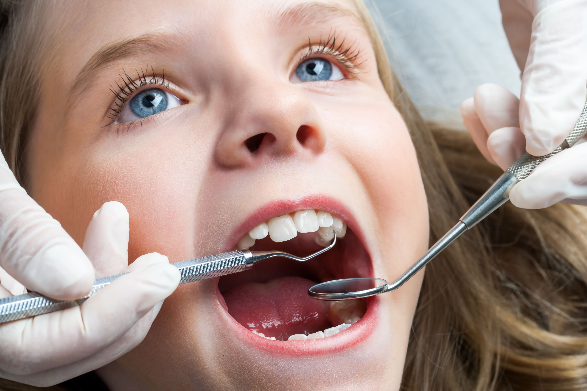

Dental Health Articles
Explore helpful resources and tips from 100SMILES Dental Care to keep your smile bright and healthy. Click any title to learn more.
The Importance of Regular Dental Check-Ups
Discover why routine dental visits are essential for early detection of oral health issues and maintaining long-term wellness.
Tips for Maintaining Oral Hygiene
Learn the daily habits and care techniques that support healthy teeth and gums.
Understanding Dental Implants
Find out how dental implants can restore both function and appearance after tooth loss.
How to Choose the Right Toothbrush
Get expert advice on choosing the right toothbrush for your needs and improving your daily brushing routine.
The Importance of Annual Dental Check-ups: Investing in Lifelong Dental Health
Your smile reflects your health, confidence, and happiness. Annual dental check-ups play a key role in protecting your oral health by enabling early detection, preventive care, and personalised guidance.
1. Early Detection of Health Issues
Annual dental check-ups allow dentists to detect potential health issues early. Just as regular doctor visits are vital for your overall health, these visits ensure that emerging concerns are identified and treated before they escalate, improving outcomes and maintaining well-being.
2. Preventive Care
Routine cleanings and X-rays protect you from serious dental diseases. Preventive care reduces long-term treatment costs and ensures stronger, healthier teeth and gums.
3. Tailored Nutritional Guidance
Each patient has unique dietary needs. During your annual visit, dentists can provide nutritional advice that supports dental health and overall vitality, helping you maintain a balanced and smile-friendly diet.
4. Dental Health Evaluation
Oral health is closely linked to overall wellness. Regular examinations of your teeth and gums help detect dental disease early, promote proper hygiene habits, and contribute to better long-term health.
5. Holistic Well-being
Beyond preventing issues, regular dental care improves your confidence and quality of life. A healthy mouth promotes better self-esteem and supports your mental and physical health.
6. Addressing Behavioural Changes
Changes in dental habits or discomfort may indicate underlying health concerns. Annual visits offer a chance to discuss these changes and receive professional guidance for proactive management.
To summup, Investing in an annual dental check-up is an investment in your lifelong health and happiness. Schedule your appointment today to enjoy lasting oral health and a confident, radiant smile!